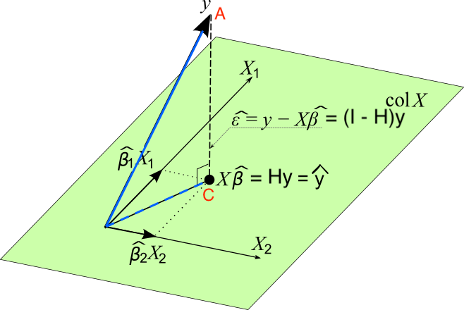

Multiple Linear Regression - Matrix Approach
MATH 4780 / MSSC 5780 Regression Analysis
Department of Mathematical and Statistical Sciences
Marquette University
Regression Model in Matrix Form
\[y_i= \beta_0 + \beta_1x_{i1} + \beta_2x_{i2} + \dots + \beta_kx_{ik} + \epsilon_i, \quad \epsilon_i \stackrel{iid}{\sim} N(0, \sigma^2), \quad i = 1, 2, \dots, n\]
\[\bf y = \bf X \boldsymbol \beta+ \boldsymbol \epsilon\] where
\[\begin{align} \bf y = \begin{bmatrix} y_1 \\ y_2 \\ \vdots \\ y_n \end{bmatrix},\quad \bf X = \begin{bmatrix} 1 & x_{11} & x_{12} & \cdots & x_{1k} \\ 1 & x_{21} & x_{22} & \cdots & x_{2k} \\ \vdots & \vdots & \vdots & \ddots & \vdots \\ 1 & x_{n1} & x_{n2} & \cdots & x_{nk} \end{bmatrix}, \quad \boldsymbol \beta= \begin{bmatrix} \beta_0 \\ \beta_1 \\ \vdots \\ \beta_k \end{bmatrix} , \quad \boldsymbol \epsilon= \begin{bmatrix} \epsilon_1 \\ \epsilon_2 \\ \vdots \\ \epsilon_n\end{bmatrix} \end{align}\]
- \({\bf X}_{n \times p}\): Design matrix
- \(\boldsymbol \epsilon\sim MVN_n({\bf 0}, \sigma^2 {\bf I}_n)\) 1
Regression Model in Matrix Form
For a random vector \({\bf Z} = (Z_1, \dots, Z_n)'\), its mean vector is \[E({\bf Z}) = E\begin{pmatrix} Z_1 \\ Z_2 \\ \vdots \\ Z_n\end{pmatrix} = \begin{bmatrix} E(Z_1) \\ E(Z_2) \\ \vdots \\ E(Z_n)\end{bmatrix}\]
Its (symmetric) variance-covariance matrix is \[\scriptsize \begin{align} \mathrm{Cov}({\bf Z}) = {\bf \Sigma} &= \begin{bmatrix} \mathrm{Var}(Z_1) & \mathrm{Cov}(Z_1, Z_2) & \cdots & \mathrm{Cov}(Z_1, Z_n) \\ \mathrm{Cov}(Z_2, Z_1) & \mathrm{Var}(Z_2) & \cdots & \mathrm{Cov}(Z_2, Z_n) \\ \vdots & \vdots & \ddots & \vdots \\ \mathrm{Cov}(Z_n, Z_1) & \mathrm{Cov}(Z_n, Z_2) & \cdots & \mathrm{Var}(Z_n) \end{bmatrix} \end{align}\]
Least Squares Estimation in Matrix Form
\[S(\beta_0, \beta_1, \dots, \beta_k) = \sum_{i=1}^n\epsilon_i^2 = \sum_{i=1}^n\left(y_i - \beta_0 - \sum_{j=1}^k\beta_j x_{ij}\right)^2\]
\[\begin{align} \left.\frac{\partial S}{\partial\beta_0}\right\vert_{b_0, b_1, \dots, b_k} &= -2 \sum_{i=1}^n\left(y_i - b_0 - \sum_{j=1}^k b_j x_{ij}\right) = 0\\ \left.\frac{\partial S}{\partial\beta_j}\right\vert_{b_0, b_1, \dots, b_k} &= -2 \sum_{i=1}^n\left(y_i - b_0 - \sum_{j=1}^k b_j x_{ij}\right)x_{ij} = 0, \quad j = 1, 2, \dots, k \end{align}\]
\[\begin{align} S(\boldsymbol \beta) = \sum_{i=1}^n\epsilon_i^2 = \boldsymbol \epsilon'\boldsymbol \epsilon&= (\bf y - \bf X \boldsymbol \beta)'(\bf y - \bf X \boldsymbol \beta) \\ &= \bf y'\bf y - \boldsymbol \beta'\bf X'\bf y - \bf y'\bf X \boldsymbol \beta+ \boldsymbol \beta' \bf X' \bf X \boldsymbol \beta\\ &={\bf y}'{\bf y} - 2\boldsymbol \beta'{\bf X}'{\bf y} + \boldsymbol \beta' {\bf X}' {\bf X} \boldsymbol \beta \end{align}\]
Least Squares Estimation in Matrix Form
\[\begin{align} S(\boldsymbol \beta) = \sum_{i=1}^n\epsilon_i^2 = \boldsymbol \epsilon'\boldsymbol \epsilon&= (\bf y - \bf X \boldsymbol \beta)'(\bf y - \bf X \boldsymbol \beta) \\ &= \bf y'\bf y - \boldsymbol \beta'\bf X'\bf y - \bf y'\bf X \boldsymbol \beta+ \boldsymbol \beta' \bf X' \bf X \boldsymbol \beta\\ &={\bf y}'{\bf y} - 2\boldsymbol \beta'{\bf X}'{\bf y} + \boldsymbol \beta' {\bf X}' {\bf X} \boldsymbol \beta \end{align}\]
Let \({\bf t}\) and \({\bf a}\) be \(n \times 1\) column vectors, and \({\bf A}_{n \times n}\) is a symmetric matrix.
\(\frac{\partial {\bf t}'{\bf a} }{\partial {\bf t}} = \frac{\partial {\bf a}'{\bf t} }{\partial {\bf t}} = {\bf a}\)
\(\frac{\partial {\bf t}'{\bf A} {\bf t}}{\partial {\bf t}} = 2{\bf A} {\bf t}\)
- Normal equations: \(\begin{align} \left.\frac{\partial S}{\partial \boldsymbol \beta}\right \vert_{\bf b} = -2 {\bf X}' {\bf y} + 2 {\bf X}' {\bf X} {\bf b} = \boldsymbol{0} \end{align}\)
- LSE for \(\boldsymbol \beta\): \(\begin{align} \boxed{{\bf b} = ({\bf X}' {\bf X}) ^{-1} {\bf X}' \bf y} \end{align}\)
Normal Equations
\((\bf X' \bf X) \bf b = \bf X' \bf y\)

R Lab Design Matrix
R Lab Regression Coefficients
Hat Matrix
- In SLR, \(\hat{y}_i = h_{i1}y_1 + h_{i2}y_2 + \cdots + h_{in}y_n = {\bf h}_i'{\bf y}\) where \(h_{ij} = \frac{1}{n} + \frac{(x_i-\overline{x})(x_j-\overline{x})}{S_{xx}}\) and \({\bf h}_i' = (h_{i1}, h_{i2}, \dots, h_{in})\). The hat matrix is \({\bf H} = (h_{ij})_{n \times n}\).
\[\hat{\bf y} = {\bf X} {\bf b} = {\bf X} ({\bf X}' {\bf X}) ^{-1} \bf X' \bf y = \bf H \bf y\]
\({\bf H} = {\bf X} ({\bf X}' {\bf X}) ^{-1} \bf X'\)
The vector of residuals \(e_i = y_i - \hat{y}_i\) is \[\bf e = \bf y - \hat{\bf y} = \bf y - \bf X \bf b = \bf y -\bf H \bf y = (\bf I - \bf H) \bf y\]
- Both \(\bf H\) and \(\bf I-H\) are symmetric and idempotent. They are projection matrices.
- \(\bf H\) projects \(\bf y\) to \(\hat{\bf y}\) on the \(p\)-dimensional space spanned by columns of \(\bf X\), or the column space of \(\bf X\), \(Col(\bf X)\).
- \(\bf I - H\) projects \(\bf y\) to \(\bf e\) on the space perpendicular to \(Col(\bf X)\), or \(Col(\bf X)^{\bot}\).
Geometrical Interpretation of Least Squares
- \(Col({\bf X}) = \{ {\bf Xb}: {\bf b} \in {\bf R}^p \}\)
- \({\bf y} \notin Col({\bf X})\)
- \(\hat{{\bf y}} = {\bf Xb} = {\bf H} {\bf y} \in Col({\bf X})\)
- Minimize the distance of \(\color{red}{A}\) to \(Col(\bf X)\): Find the point in \(Col(\bf X)\) that is closest to \(A\).

Geometrical Interpretation of Least Squares
- The distance is minimized when the point in the space is the foot of the line from \(A\) normal to the space. This is point \(C\). \(\small {\bf e} = ({\bf y - \hat{\bf y}}) = ({\bf y - X b}) = ({\bf I} - {\bf H}) {\bf y} \perp Col({\bf X})\)
- \(\bf X'(y - Xb) = 0\)
Searching for the LS solution \(\bf b\) that minimizes \(SS_{res}\) is the same as locating the point \({\bf Xb} \in Col({\bf X})\) that is as close to \(\bf y\) as possible!
R Lab Verify Identity
\({\bf H} = {\bf X} ({\bf X}' {\bf X}) ^{-1} \bf X'\)
\(\hat{\bf y} = \bf H \bf y\)
Multivariate Normal Distribution
\({\bf y} \sim N(\boldsymbol \mu, {\bf \Sigma})\), and \({\bf Z = By + c}\) with a constant matrix \({\bf B}\) and vector \(\bf c\), then \[{\bf Z} \sim N({\bf B\boldsymbol \mu}, {\bf B \Sigma B}')\]
\({\bf b} = ({\bf X}' {\bf X}) ^{-1} \bf X' \bf y\)
\[\textbf{b} \sim N\left(\boldsymbol \beta, \sigma^2 {\bf (X'X)}^{-1} \right)\] \[E(\textbf{b}) = E\left[ {\bf (X'X)}^{-1} {\bf X}' {\bf y}\right] = \boldsymbol \beta\] \[\mathrm{Cov}(\textbf{b}) = \mathrm{Cov}\left[{\bf (X'X)}^{-1} {\bf X}' {\bf y} \right] = \sigma^2 {\bf (X'X)}^{-1}\]
The standard error of \(b_j\) is \({\sqrt{s^2C_{jj}}}\), where \(C_{jj}\) is the diagonal element of \(({\bf X'X})^{-1}\) corresponding to \(b_j\).
Hypothesis Testing
Tests on Subsets of Coefficients
Reduced Model vs. Full Model
- Overall test of significance: all predictors vs. Marginal \(t\)-test: one single predictor
- How to test any subset of predictors?
- Full Model: \(y = \beta_0 + \beta_1x_1+\beta_2x_2 + \beta_3x_3 + \beta_4x_4 + \epsilon\)
- \(H_0: \beta_{2} = \beta_{4} = 0\)
- Reduced Model (under \(H_0\)): \(y = \beta_0 + \beta_1x_1 + \beta_3x_3 + \epsilon\)
- Like to see if \(x_2\) and \(x_4\) can contribute significantly to the regression model when \(x_1\) and \(x_3\) are in the model.
- If yes, \(\beta_{2} \ne 0\) and/or \(\beta_{4} \ne 0\). (Reject \(H_0\))
- Otherwise, \(\beta_{2} = \beta_{4} = 0\). (Do not reject \(H_0\))
Given \(x_1\) and \(x_3\) in the model, we examine how much extra \(SS_R\) is increased ( \(SS_{res}\) is reduced) if \(x_2\) and \(x_4\) are added to the model.
Extra Sum-of-sqaures
Full Model: \(\bf y = X\boldsymbol \beta+\boldsymbol \epsilon\)
Partition coefficient vector:
\[\boldsymbol \beta_{p \times 1} = \left[ \begin{array}{c} \boldsymbol \beta_1 \\ \hline \boldsymbol \beta_2 \end{array} \right]\]
where \(\boldsymbol \beta_1\) is \((p-r) \times 1\) and \(\boldsymbol \beta_2\) is \(r \times 1\)
Test \(H_0: \boldsymbol \beta_2 = {\bf 0}\), \(H_1: \boldsymbol \beta_2 \ne {\bf 0}\)
Example: \(p=5\), \(r=2\), \(\boldsymbol \beta_1 = (\beta_0, \beta_1, \beta_3)'\), \(\boldsymbol \beta_2 = (\beta_2, \beta_4)'\).
\[{\bf y} = {\bf X} \boldsymbol \beta+\boldsymbol \epsilon= {\bf X}_1\boldsymbol \beta_1 + {\bf X}_2\boldsymbol \beta_2 + \boldsymbol \epsilon\]
\(n \times (p-r)\) matrix \({\bf X}_1\): the columns of \(\bf X\) associated with \(\boldsymbol \beta_1\)
\(n \times r\) matrix \({\bf X}_2\): the columns of \(\bf X\) associated with \(\boldsymbol \beta_2\)
Extra Sum-of-sqaures
Full Model: \(\small \color{red}{{\bf y} = {\bf X}\boldsymbol \beta+\boldsymbol \epsilon= {\bf X}_1\boldsymbol \beta_1 + {\bf X}_2\boldsymbol \beta_2 + \boldsymbol \epsilon}\)
- \({\bf b} = ({\bf X}' {\bf X}) ^{-1} {\bf X}' {\bf y}\)
Reduced Model: \(\small \color{red}{{\bf y} = {\bf X}_1\boldsymbol \beta_1+\boldsymbol \epsilon}\) \(\color{red}{(\boldsymbol \beta_2 = {\bf 0})}\)
- \({\bf b}_1 = ({\bf X}_1' {\bf X}_1) ^{-1} {\bf X}_1' {\bf y}\)
- The \(SS_R\) due to \(\boldsymbol \beta_2\) given that \(\boldsymbol \beta_1\) is in the model is \[\begin{align} SS_R(\boldsymbol \beta_2|\boldsymbol \beta_1) &= SS_R(\boldsymbol \beta) - SS_R(\boldsymbol \beta_1)\\ &= SS_R(\boldsymbol \beta_1, \boldsymbol \beta_2) - SS_R(\boldsymbol \beta_1) \end{align}\] with \(r\) dfs.
- This is the extra sum of squares due to \(\boldsymbol \beta_2\).
- It measures the increase in the \(SS_R\) that results from adding regressors in \({\bf X}_2\) to the model that already contains regressors in \({\bf X}_1\).
Partial \(F\)-test
- \(F_{test} = \frac{SS_R(\boldsymbol \beta_2|\boldsymbol \beta_1)/r}{SS_{res}(\boldsymbol \beta)/(n-p)} = \frac{MS_R(\boldsymbol \beta_2|\boldsymbol \beta_1)}{MS_{res}}\)
- Under \(H_0\) that \(\boldsymbol \beta_2 = \bf 0\), \(F_{test} \sim F_{r, n-p}\). \((p = k+1)\).
- Reject \(H_0\) if \(F_{test} > F_{\alpha, r, n-p}\).
Given the regressors of \({\bf X}_1\) are in the model,
If the regressors of \({\bf X}_2\) contribute much, \(SS_R(\boldsymbol \beta_2|\boldsymbol \beta_1)\) will be large.
A large \(SS_R(\boldsymbol \beta_2|\boldsymbol \beta_1)\) implies a large \(F_{test}\).
A large \(F_{test}\) tends to reject \(H_0\), and conclude that \(\boldsymbol \beta_2 \ne \bf 0\).
\(\boldsymbol \beta_2 \ne \bf 0\) means the regressors of \({\bf X}_2\) provide additional explanatory and prediction power that \({\bf X}_1\) cannot provide.
Example: Delivery Data
- \(H_0: \beta_2 = 0 \qquad H_1: \beta_2 \ne 0\)
- Full model: \(y = \beta_0 + \beta_1x_1+\beta_2x_2+\epsilon\)
What is the reduced model?
- Reduced model: \(y = \beta_0 + \beta_1x_1 +\epsilon\)
- \(SS_R(\beta_2|\beta_1, \beta_0) = SS_R(\beta_2, \beta_1, \beta_0) -SS_R(\beta_1, \beta_0)\)
- \(F_{test} = \frac{SS_R(\beta_2|\beta_1, \beta_0)/1}{SS_{res}(\boldsymbol \beta)/(25-3)}\)
- Reject \(H_0\) if \(F_{test} > F_{\alpha, 1, 22}\)
When \(r=1\), partial \(F\)-test is equivalent to marginal \(t\)-test.
R Lab Extra Sum-of-sqaures Approach
full_lm <- delivery_lm
reduced_lm <- lm(time ~ cases, data = delivery_data)
anova(reduced_lm, full_lm)Analysis of Variance Table
Model 1: time ~ cases
Model 2: time ~ cases + distance
Res.Df RSS Df Sum of Sq F Pr(>F)
1 23 402
2 22 234 1 168 15.8 0.00063 ***
---
Signif. codes: 0 '***' 0.001 '**' 0.01 '*' 0.05 '.' 0.1 ' ' 1Standardized Regression Coefficients
\(\hat{y} = 5 + x_1 + 1000x_2\). Can we say the effect of \(x_2\) on \(y\) is 1000 times larger than the effect of \(x_1\)?
- Nope! If \(x_1\) is measured in litres and \(x_2\) in millilitres, although \(b_2\) is 1000 times larger than \(b_1\), both effects on \(\hat{y}\) are identical.
- The units of \(\beta_j\) are \(\frac{\text{units of } y}{\text{units of } x_j}\)
- \(\beta_2\): delivery time (min) \((y)\) per distance (ft) walked by the driver \((x_2)\).
- It is helpful to work with dimensionless or standardized coefficients.
- comparison
- get rid of round-off errors in \({\bf (X'X)}^{-1}\).
In Intro Stats, how do we standardize a variable?
Unit Normal Scaling
- \(z_{ij} = \frac{x_{ij}-\overline{x}_j}{s_j}, \, i = 1, \dots, n, \, j = 1, \dots, k\), where \(s_j\) is the sample SD of \(x_j\).
- \(y^*_{i} = \frac{y_{i}-\overline{y}}{s_y}, \, i = 1, \dots, n\), where \(s_y\) is the sample SD of \(y\).
- The scaled predictors and response have mean 0 and variance 1.
- The new model: \[y_i^* = \alpha_1z_{i1} + \alpha_2z_{i2} + \cdots + \alpha_kz_{ik} + \epsilon_i\]
Why no intercept term \(\alpha_0\)?
- The least-squares estimator for \(\boldsymbol \alpha\): \[{\bf a} = {\bf (Z'Z)}^{-1} {\bf Z'y}^*\]
R Lab Standardized Coefficients
## unit normal scaling
scale_data <- scale(delivery_data, center = TRUE, scale = TRUE) ## becomes a matrix
apply(scale_data, 2, mean) time cases distance
-6.2e-17 8.9e-18 9.8e-17 time cases distance
1 1 1 ## No-intercept
scale_lm <- lm(time ~ cases + distance - 1, data = as.data.frame(scale_data))
scale_lm$coefficients cases distance
0.72 0.30 ## With intercept
scale_lm_0 <- lm(time ~ cases + distance, data = as.data.frame(scale_data))
scale_lm_0$coefficients(Intercept) cases distance
-3.3e-17 7.2e-01 3.0e-01